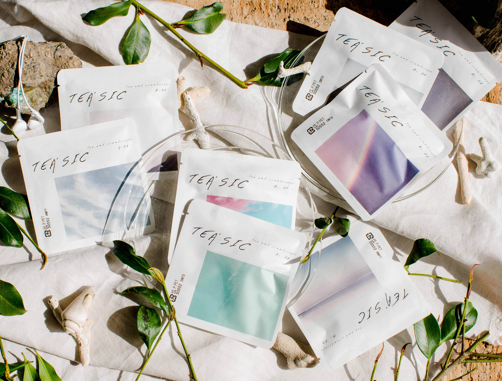

時の醸造所
感性体験を音楽で設計する新しいビジネスを創出します。
まず、食の領域から。
ABOUT
音楽家の雇用創出と地域の課題解決を目的に、音楽の可能性を新しいビジネスへと翻訳する会社です。
① 音楽 × 食
フレーバースケープ®
味わいの時間変化を音楽で設計し、食品ブランドの商品開発・体験設計・販売サポートを一気通貫で支援。
② 音楽 × 雇用
LiveWork
音楽家と地域をつなぐマッチングで、ライブ活動と仕事を両立できる新しい働き方を静岡県から提案。
BUSINESS
味の変化を「時間軸」で分析・記録する、時の醸造所独自の手法です。口に含んだ瞬間から余韻まで、食の体験を楽譜のように可視化します。
「音で、好きを選ぶ。」
カフェの店頭でQRコードをかざすと、豆ごとの音が流れる。日本酒の売り場で、音を聴いて好きな一本を選ぶ。専門用語も、難しい知識もいらない。感覚で「好き」を見つけられる、新しい購買体験です。
2020年より酒屋・カフェでの実証実験を実施。小学館「@DIME」、TBSラジオ「檀れい 今日の1ページ」に取り上げられるなど、確かな市場ニーズを獲得しています。フレーバースケープ®は、食と音楽のペアリングを論理的に説明できる唯一の理論として、新しい食体験の入口を設計します。
01
味覚の時間分析
食品の味わいを時間軸で計測・記録。口に含んだ瞬間から余韻まで変化を捉えます。
02
構造の可視化
分析データを楽譜のような形式で可視化。誰もが理解できる「味の設計図」に変換します。
03
音楽的表現へ翻訳
味わいの時間構造を音楽へと翻訳。味覚と聴覚の両面からブランド体験を設計します。
04
商品・体験へ応用
分析結果を商品開発・ブランディング・イベント設計に活用。再現性ある体験設計を実現します。
② 音楽 × 雇用
音楽家が音楽だけで生計を立てることは容易ではありません。LiveWork®は、ミュージシャン・音楽家と企業・自治体をマッチングするプラットフォームです。地域活性を目的としたイベントに県外からミュージシャンを誘致する際、演奏と対価のみでは地域と関わることはできません。ミュージシャンは演奏以外に、その地域の雇用を提供します。地域に関わる事で、関係人口が増え、ファン化が促進できます。活動と地域の仕事を両立できる新しい働き方のプラットフォームとして構築中です。(2026年4月現在)
音楽家へ
地域での仕事を通じて安定した収入を確保しながら、音楽活動を継続できる環境を提供。
企業・自治体へ
音楽家の感性・表現力・コミュニケーション力を地域のイベント・教育・PRに活用できます。
展開エリア
静岡県を皮切りにパイロット展開準備中。音楽家と地域をつなぐ新しいエコシステムを構築します。
WORKS
2024
渋谷スクランブルスクエア「GO GREEN」お茶イベント
都市型お茶イベントのプロデュース。フレーバースケープ®を活用した体験設計を担当。
体験設計2024
渋谷sakura stageノベルティ TEA'SIC採用
大規模商業施設のオープニングイベントノベルティにTEA'SICが採用。ブランド体験を提供。
ブランド体験2023
HARASHIMO BASE アレルギーフリーキャラメルCHOU
コンセプト設計からレシピ開発、BGM制作まで一貫担当。県産品コンクール優秀賞受賞。
商品開発2022
大阪万博 出店商品開発受託
日本茶を使用した日本酒3種を開発。万博という世界的な舞台に向けた商品設計を担当。
商品開発2021
intaimeクラファン限定イヤホンのノベルティ採用
国産ハイレゾイヤホンで人気のintime。クラウドファンディング限定イヤホンのノベルティとして、TEA'SICが採用される。
体験設計2021
小学館「@DIME」掲載
「聴いて選ぶニューノーマルのお茶」としてTEA'SICとフレーバースケープ®が紹介される。
メディア2021
TBSラジオ「檀れい 今日の1ページ」紹介
音で選ぶ食体験として、TEA'SICとフレーバースケープ®の取り組みが紹介される。
メディア2021
総務省「異能vation2021」上位25ノミネート
味の分析手法が全国から選ばれ上位25にノミネート。技術の独自性が認められる。
技術認定2020
酒屋・カフェにて実証実験実施
槙野酒店（おちらと）、有楽町micro FOOD&IDEA MARKETにて、店頭でフレーバーサウンドスケープを聴いて購入できるインスタレーションを実証。
実証実験SERVICES & PRODUCTS
商品開発から販売サポート、継続フォローまで。食の領域を一気通貫でお手伝いします。
OUR PRODUCT

TEA'SIC
フレーバースケープ®を体験できる、音楽付き日本茶ブランド。味覚と聴覚の両面から設計された、時の醸造所の世界観をそのまま手に取れるプロダクトです。
渋谷sakura stage、各種イベントにて展開中。
まずはTEA'SICから、時の醸造所の世界観に触れてください。
つくる — 食品ブランドの商品・体験を設計する
01
ブランド開発パッケージ
商品コンセプトの設計から、レシピ・味覚設計、ブランドサウンド制作まで一貫して担当。「売れる食品」には、設計された体験があります。
02
新商品開発受託
市場・味覚分析から、コンセプト設計・試作、ブランディングまで一体型で開発。独自の分析手法で、他にない商品を生み出します。
03
体験設計・イベントプロデュース
フレーバースケープ®を活用した体験空間・イベントの設計。味覚と音楽を融合させた、記憶に残る食体験をプロデュースします。
うる — 作った商品を、売れるところまで伴走する
04
販売・PR伴走サポート
商品開発後のイベント出展・店頭販売・体験設計まで一貫してサポート。フレーバーサウンドスケープ®を活用したPRで、作るだけで終わらない「売れるところまで」の伴走を提供します。
CONTACT
商品開発・ブランディング・イベント設計・LiveWorkなど、お気軽にご相談ください。内容をお聞きした上で、最適なご提案をいたします。
お問い合わせはこちら通常3営業日以内にご返信いたします